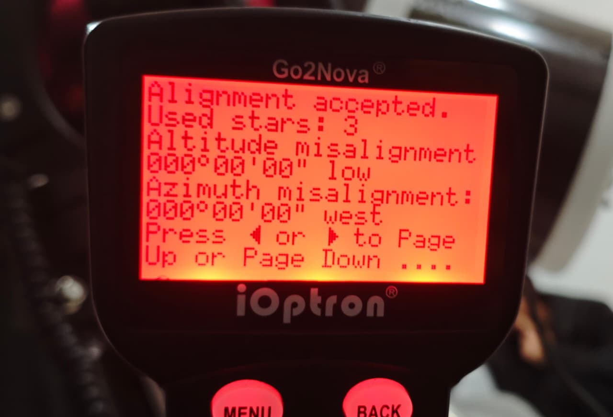

| Judul Praktikum | Polar alignment dan CCD |
|---|---|
| Hari/Tanggal | Sabtu, 7 Maret 2026 |
| Lokasi | Laboratorium Teknik 5 ITERA |
| Koordinat | -5.3617497661375255, 105.31084751534713 |
| Cuaca | Gerimis |
Pada praktikum ini dilakukan beberapa metode alignment teleskop, yaitu One Star Alignment, Two Star Alignment, Three Star Alignment, Solar System Alignment, dan Polar Iterate. Hasil pengamatan menunjukkan bahwa metode Three Star Alignment memberikan akurasi tracking terbaik karena mampu mengoreksi kesalahan mounting dengan lebih baik dibandingkan metode lainnya. Sementara itu, Polar Iterate berhasil meningkatkan ketepatan penyelarasan sumbu teleskop sehingga pergeseran objek selama pengamatan menjadi sangat kecil.



Selain proses alignment, dilakukan pula pengaturan parameter astrofotografi seperti exposure time dan gain menggunakan perangkat lunak N.I.N.A. Exposure yang lebih lama mampu meningkatkan kecerahan objek langit, sedangkan nilai gain yang terlalu tinggi dapat menambah noise pada citra. Oleh karena itu, kualitas hasil observasi sangat dipengaruhi oleh kombinasi alignment yang tepat serta pengaturan exposure dan gain yang optimal. Praktikum ini memberikan pemahaman mengenai pentingnya polar alignment dalam menjaga kestabilan objek pada bidang pandang dan menghasilkan citra astronomi yang lebih baik.
Kembali